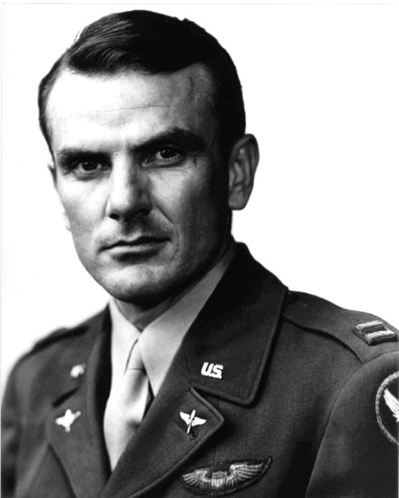
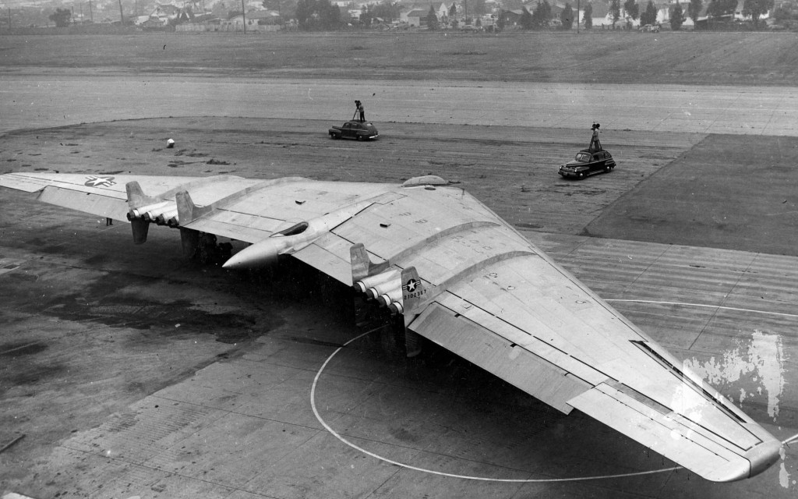
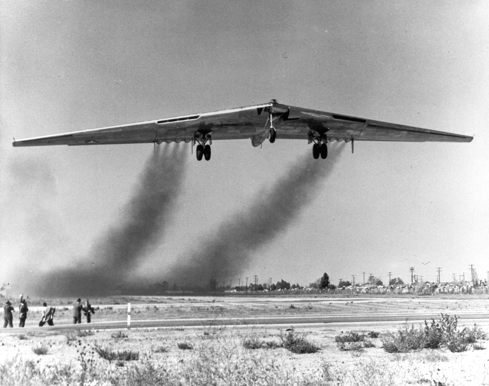
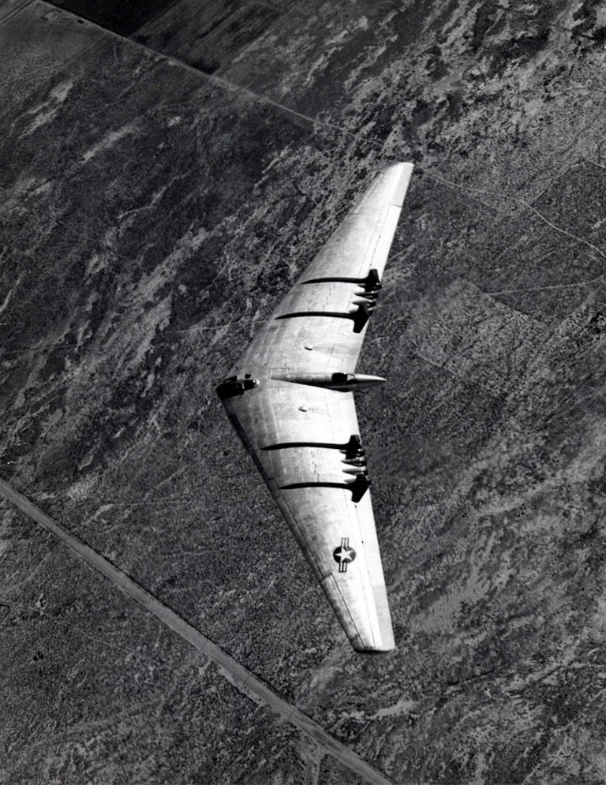
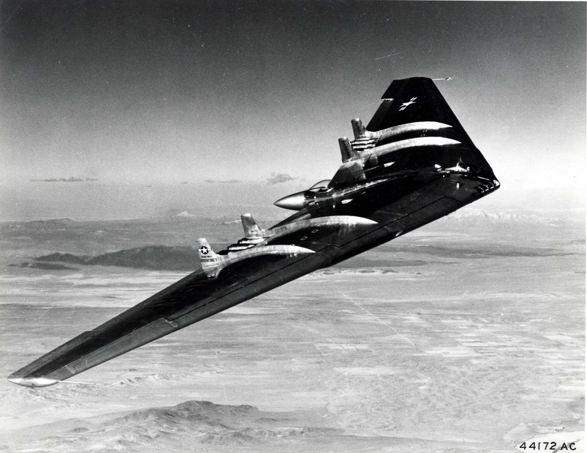

He flew the wing that the world said was impossible — and gave his life proving it wasn't. Forty-one years later, it became the B-2 Spirit. A desert air base took his name. Lancaster inherited his sky.

Glen Walter Edwards was born on November 6, 1918, in Medicine Hat, Alberta, Canada, to American parents — a family that soon settled in Lincoln, California. He grew up as a restless, mechanically gifted young man who took apart engines to understand them and put them back together just to see if he could do it faster. By the time he enrolled at California Polytechnic State University, his instructors already saw something different in him: the rare combination of engineering instinct and physical coordination that produces exceptional aviators.
The classroom could only hold him for so long. When the Army Air Corps opened its aviation cadet program, Glen Edwards walked through the door without hesitation.
He was commissioned in 1941. He was twenty-two years old. A war was coming, and the sky — his sky — was waiting.
When America entered World War II, Glen Edwards went to war in the skies over Europe. Assigned to the Eighth Air Force, he flew combat missions in P-38 Lightnings and P-47 Thunderbolts over Nazi-occupied territory — the brutal, unforgiving work of aerial combat against a capable and determined enemy. He proved himself exceptional: the kind of pilot who understood the aircraft as an extension of himself.
He returned from the war decorated, with a reputation that had already reached the officers responsible for filling the most exclusive and dangerous assignment in American aviation — experimental test flight at Muroc Army Air Field, a remote, classified base carved from the Mojave Desert just north of the Antelope Valley.

The Northrop YB-49 was unlike anything in the sky. A pure flying wing — no fuselage, no tail, no vertical surfaces of any conventional kind — it was the radical vision of Jack Northrop, who had spent decades pursuing the design as the most aerodynamically efficient configuration possible for a long-range bomber. The YB-49 was that dream made real: sleek, enormous, and aerodynamically demanding in ways that pushed even the best pilots to their absolute limits.
It was profoundly difficult to fly. Without the stabilizing influence of a conventional tail, it hunted through the air — an oscillating yaw that demanded constant correction, continuous attention. Pilots who flew it described an aircraft that required total physical engagement every moment. There was no trimmed, hands-off flight. Every minute demanded the pilot.
The flying wing demanded everything you had and then asked for more. You didn't fly it so much as negotiate with it — and the negotiation never stopped.
— Test pilot accounts, Muroc Army Air Field, 1947–1948

Glen Edwards flew it anyway — again and again. On April 26, 1948, the YB-49 completed a landmark 9.5-hour endurance flight, with 6.5 of those hours at 40,000 feet. It was one of the most remarkable test flights in aviation history. The program seemed on the verge of proving the flying wing was the future. Everything pointed forward.
That flight would be the program's high-water mark.
The morning of June 5, 1948, was clear over Muroc. Captain Glen Edwards climbed into the co-pilot seat of YB-49 serial number 42-102368 alongside pilot Major Daniel A. Forbes Jr. The mission was stall recovery performance testing — pushing the aircraft to the edge of its flight envelope to understand how it behaved and whether a pilot could bring it back. Exactly the kind of mission that defined what test pilots did.
At 40,000 feet north of the base, the YB-49 reached a point from which there was no return. In a catastrophic structural failure, the outer wing panels tore free. The aircraft disintegrated over the Mojave Desert, approximately ten miles east of the small town of Mojave.
Captain Glen W. Edwards was killed instantly. So were Major Daniel A. Forbes Jr., First Lieutenant Edward L. Swindell, and civilian engineers Charles H. LaFountain and Clare C. Lesser. Five men. One aircraft. One morning. No survivors.

The YB-49 program did not survive. The second aircraft was destroyed in a taxiing accident months later. The program was cancelled. The flying wing, it seemed, had died in the Mojave Desert along with its crew. A small memorial marks the crash site today — veterans, aviators, and Northrop Grumman engineers still make the pilgrimage across the desert to stand there, because they understand what those five men's sacrifice ultimately made possible.
In December 1949, the United States Air Force renamed Muroc Army Air Field. It became Edwards Air Force Base — a name now synonymous with the cutting edge of American aviation. Chuck Yeager broke the sound barrier there. Astronauts trained there. Every generation of American air power has been forged there. The base carries Glen Edwards' name because the Air Force believed he deserved to be remembered permanently in the place where brave men go to find out what is possible.
The flying wing was not dead. It was waiting.
Forty-one years after the YB-49 fell over the Mojave, Northrop unveiled the B-2 Spirit stealth bomber — a flying wing, with the same 172-foot wingspan as the YB-49, guided by fly-by-wire computers that solved every stability problem the earlier aircraft could not overcome. The B-2 Spirit was designed and built in the Antelope Valley. It was tested at Edwards Air Force Base. Lancaster, California — home to Northrop Grumman's B-2 production — sits in the shadow of that lineage every single day.
It would be 41 years before the flying wing concept succeeded — with the Northrop B-2 Spirit. The same wingspan. The same dream. The same desert sky.
— This Day in Aviation · June 5, 1948When the B-2 Spirit flies over the Antelope Valley — and it does, because this is where it was born — it flies over the same desert where Captain Glen W. Edwards gave his life proving the wing was possible. He did not live to see it. He could not have imagined it. But it could not exist without him.
The Best of America Archive records his name here because the people of the Antelope Valley deserve to know that the aircraft they built, the base that guards their horizon, and the freedom they live under all carry the fingerprints of a twenty-nine-year-old test pilot from Lincoln, California, who flew toward the unknown on a June morning and did not come back.
He was an American. He was magnificent. And Lancaster was always his home sky.
“He flew toward the unknown so that those who followed him might find solid ground. The Antelope Valley remembers.”
This profile made possible by Bravery Brewing Co. · Lancaster, California · Founding Local Patriot Business™ · TheBestofAmerica.org